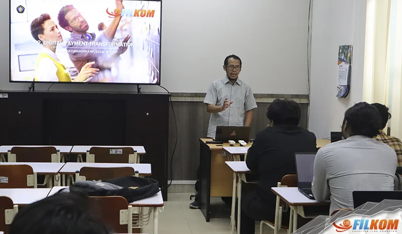

Fakultas Ilmu Komputer, Universitas Brawijaya (FILKOM UB) menawarkan program studi unggulan yang menjawab kebutuhan era digital saat ini, yaitu Pendidikan Teknologi Informasi (PTI UB). Program studi ini resmi beroperasi sejak tahun 2014 berdasarkan Surat Keputusan Menteri Pendidikan dan Kebudayaan Republik Indonesia No. 595/E/O/2014. PTI FILKOM UB telah membuktikan kualitasnya dengan meraih akreditasi nasional status Unggul dari Lembaga Akreditasi Mandiri Kependidikan (LAMDIK) yang berlaku hingga Agustus 2028. Tidak hanya itu, PTI FILKOM UB juga mendapatkan pengakuan internasional dengan akreditasi Unconditional dari AQAS yang berlaku hingga 31 Desember 2028. Prestasi ini menjadikan PTI UB sebagai pilihan tepat bagi calon mahasiswa yang menginginkan pendidikan berkualitas tinggi di bidang teknologi informasi dan pendidikan. PTI FILKOM UB didukung oleh tim pengajar yang kompeten dan berdedikasi tinggi. Saat ini, terdapat 12 dosen yang aktif mengajar, dengan tiga di antaranya sedang melanjutkan studi ke jenjang doktor untuk meningkatkan kualifikasi dan kompetensi mereka. Hal ini menunjukkan komitmen PTI FILKOM UB dalam memberikan pendidikan terbaik bagi mahasiswanya. Minat calon mahasiswa terhadap program studi ini terus meningkat, terbukti dengan jumlah mahasiswa aktif yang mencapai lebih dari 430 orang. Keberhasilan PTI FILKOM UB juga tercermin dari lebih dari 300 alumni yang telah berhasil memasuki berbagai sektor potensial, mulai dari institusi pendidikan sebagai pengajar teknologi informasi, perusahaan teknologi informasi sebagai programmer dan machine learning engineer, hingga menjadi wirausahawan produktif di bidang teknologi informasi.
Kurikulum PTI FILKOM UB dirancang secara komprehensif dengan berfokus pada empat aspek utama yang sangat relevan dengan kebutuhan industri saat ini. Aspek-aspek tersebut meliputi pengajaran bidang studi spesifik teknologi informasi, pembuatan dan pemanfaatan produk teknologi informasi, pemanfaatan pendekatan berpikir komputasional sebagai kerangka penyelesaian masalah, serta pengembangan keterampilan kerja di bidang teknologi informasi. Dengan fokus pembelajaran yang seimbang antara teori dan praktik, mahasiswa PTI FILKOM UB dipersiapkan untuk menjadi profesional yang tidak hanya menguasai ilmu teknologi informasi, tetapi juga mampu mengajarkannya dengan efektif. Bagi lulusan SMA/SMK sederajat atau calon mahasiswa dari berbagai jurusan yang bercita-cita menjadi pengajar, pelatih, atau guru coding di bidang teknologi informasi, PTI FILKOM UB menawarkan kesempatan emas untuk mewujudkan impian tersebut. Program studi ini tidak hanya membekali mahasiswa dengan kemampuan mengajar, tetapi juga keterampilan teknologi informasi terkini yang sangat dibutuhkan industri. Mahasiswa PTI FILKOM UB akan dilatih untuk menjadi programmer, system analyst, data scientist, hingga digital content creator di bidang pendidikan. Dengan demikian, lulusan PTI UB akan memiliki keunggulan kompetitif di pasar kerja yang semakin dinamis.
Ir. Admaja Dwi Herlambang, S.Pd., M.Pd., selaku ketua prodi PTI FILKOM UB, menegaskan keunggulan program studi ini dengan menyatakan, “Berkuliah di PTI FILKOM UB sangat menguntungkan karena mendapatkan dua kepakaran sekaligus yang saat ini sedang banyak dibutuhkan masyarakat, yaitu kepakaran terkait pengajaran bidang studi teknologi informasi dan kepakaran terkait keterampilan kerja di bidang teknologi informasi.”
© Mohammad Zidane Daffa Fahreza - 2025